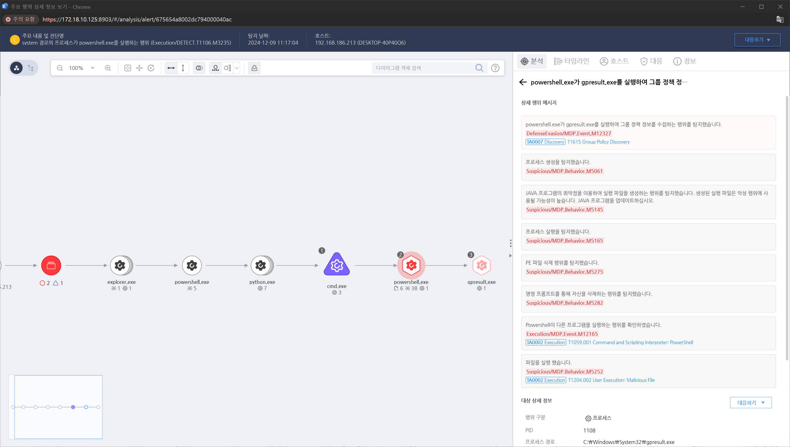

MITRE ATT&CK 액션을 기준으로 대응 방안을 작성
powershell.exe가 gpresult.exe를 실행하여 그룹 정책 정보를 수집하는 행위를 탐지합니다.

win32Process, win32OperatingSystem, win32_NetworkAdapter 등 WMI를 통해 쿼리된 명령을 추적합니다.
PowerShell 스크립트에서 Get-WmiObject 또는 Invoke-WmiMethod와 같은 WMI 명령어를 사용하는 활동을 추적합니다.
Splunk, Elastic Stack, Microsoft Sentinel 등에서 WMI와 관련된 트래픽 및 이벤트를 모니터링합니다.
Sysmon의 Event ID 20 (WMI 활동)을 활용하여, 시스템에서 발생한 WMI 쿼리를 기록합니다. 이를 통해 의심스러운 쿼리 실행을 추적할 수 있습니다.
WMI 접근 제어 강화
PowerShell 및 WMI 사용 제한
시스템 및 네트워크 탐지 강화
Windows Defender 또는 EDR 도구 활용
Action 실행시 함께 영향을 받는 다른 Techniqes
| ATT&CK |
|---|
| T1615 |
| D3FEND |
|---|
| D3-PLA Process Lineage Analysis |
| D3-SCA System Call Analysis |
| D3-NTF Network Traffic Filtering |
| D3-ITF Inbound Traffic Filtering |
| D3-OTF Outbound Traffic Filtering |
| D3-DA Dynamic Analysis |